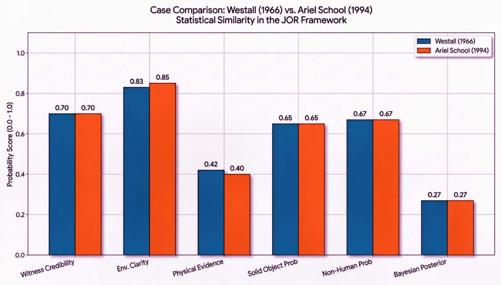
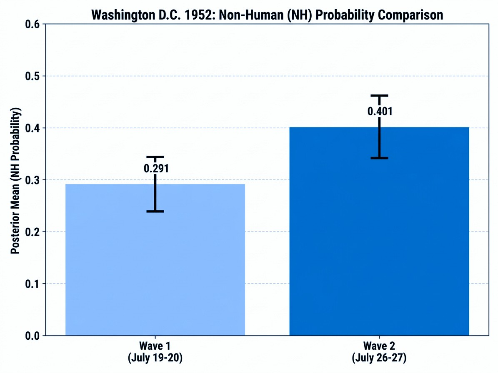
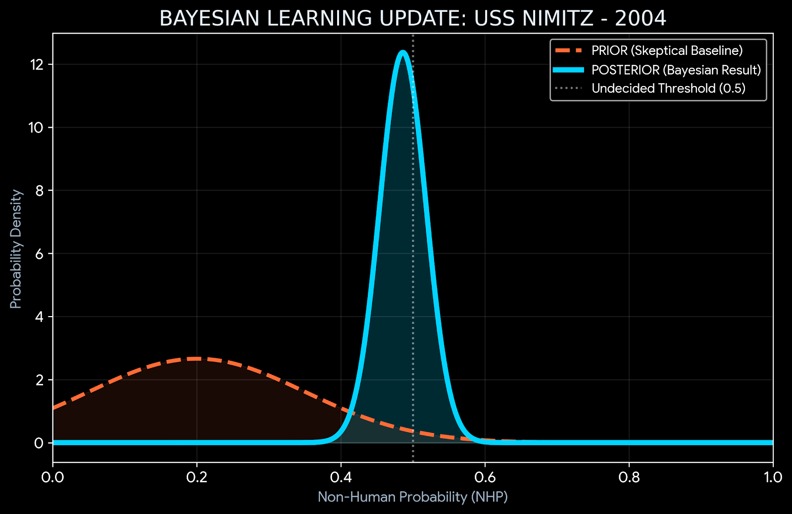
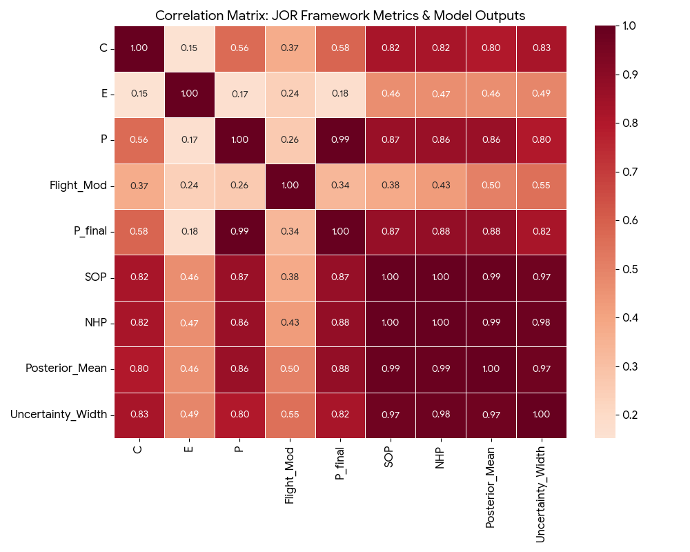

◈ CASE ANALYSIS & COMPARISONS

FIG 01: AGUADILLA (2013) ANALYSIS
Displays Raw NHP (0.870) vs. Posterior Mean (0.449) against the 0.50 Undecided Threshold.
Displays Raw NHP (0.870) vs. Posterior Mean (0.449) against the 0.50 Undecided Threshold.

FIG 02: CROSS-CASE STATISTICAL SIMILARITY
Comparative metrics for Westall (1966) and Ariel School (1994) showing near-identical Bayesian Posteriors (0.27).
Comparative metrics for Westall (1966) and Ariel School (1994) showing near-identical Bayesian Posteriors (0.27).

FIG 03: WASHINGTON D.C. (1952) WAVE COMPARISON
Bayesian analysis of the two consecutive 1952 waves. Wave 2 (0.401) registers higher NHP than Wave 1 (0.291) with broader credible intervals.
Bayesian analysis of the two consecutive 1952 waves. Wave 2 (0.401) registers higher NHP than Wave 1 (0.291) with broader credible intervals.
◈ GLOBAL DISTRIBUTION & CREDIBLE INTERVALS

FIG 04: MULTI-CASE POSTERIOR MEANS
Comprehensive map of UAP incidents plotted against Probability Zones (Low/Medium/High) and the 0.20 Skeptical Baseline.
Comprehensive map of UAP incidents plotted against Probability Zones (Low/Medium/High) and the 0.20 Skeptical Baseline.
◈ FRAMEWORK SENSITIVITY & ROBUSTNESS

FIG 05: SCENARIO WEIGHTING IMPACT
Visualizing how varying Credibility (C) and Physical (P) weights influences the final Posterior NHP.
Visualizing how varying Credibility (C) and Physical (P) weights influences the final Posterior NHP.

FIG 06: SENSITIVITY DATA MATRIX
Tabular breakdown of base scores and weights demonstrating framework robustness under extreme physical scenarios.
Tabular breakdown of base scores and weights demonstrating framework robustness under extreme physical scenarios.
◈ BAYESIAN LEARNING (PRIOR VS. POSTERIOR)

FIG 08: CASE DEEP-DIVE (USS NIMITZ 2004)
This visual demonstrates the core robustness of the JOR-Fusion logic: the ability to update beliefs based on evidence.
ANALYSIS OF THE UPDATE:
This visual demonstrates the core robustness of the JOR-Fusion logic: the ability to update beliefs based on evidence.
ANALYSIS OF THE UPDATE:
- ▷ THE PRIOR (ORANGE): Represents the 0.20 Skeptical Baseline. This is the model’s starting assumption—that any given case is likely explainable by mundane factors.
- ▷ THE POSTERIOR (BLUE): After processing the high Credibility (0.90) and Physicality (0.95) scores for the Nimitz case, the model shifts its conclusion to 0.486.
- ▷ ROBUSTNESS PROOF: Even with a heavily skeptical starting point, the framework is mathematically forced to update toward the "Undecided" threshold (0.50) when confronted with multi-sensor, multi-witness data.
◈ STATISTICAL INTERDEPENDENCE

FIG 07: CORRELATION MATRIX (N=50)
A statistical breakdown of how JOR inputs drive the PyMC Bayesian outputs across the 50-case dataset.
KEY ANALYTICS:
A statistical breakdown of how JOR inputs drive the PyMC Bayesian outputs across the 50-case dataset.
KEY ANALYTICS:
- ▷ PRIMARY DRIVERS: The Posterior Mean is most heavily tethered to Physicality (0.86) and Credibility (0.80), indicating that anomalous flight behavior and witness reliability are the strongest predictors of NH probability.
- ▷ ENVIRONMENTAL VARIANCE: Environmental Conditions (0.46) show the weakest correlation. This suggests that while clear visibility is preferred, the model prioritizes "high-strangeness" physical data (P) over simply having ideal observation conditions (E).
- ▷ UNCERTAINTY SCALING: A 0.97 correlation exists between Probability and Uncertainty Width; as the "Non-Human" likelihood increases, the model's range of probable outcomes naturally expands, reflecting the complexity of top-tier cases.